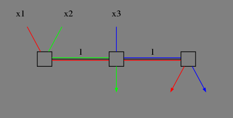

Introduction
Resource Allocation
Examples uses: x1 + x2 <= 1, x1 + x3 <= 1
Maximize Throughput
x1 = 0, x2 = x3 = 1
Max-min Fairness
maximizes the throughput of the flow receiving the minimum (of resources)
- Justification
- Used in ATM
example
x1 = x2 = x3 = 1/2
Utility Function
If xf is the rate of flow f, then the utility to flow f is
Uf(xf), where Uf(xf) is a concave utility function.
max Σ Uf(xf)
Proportional Fairness
Uf(xf) = log(Xf)
x1 = 1/3, x2 = x3 = 2/3 ?
Sometimes Adding More Resource Means Lower Performance
Internet Physical Infrastructure
- A network of networks
- Each individually administrated network is called an Autononmous System(AS)
Residential access
compus access
Network Protocol
A network protocol defines the format and the order of messages exchanged between two or more communicating entities, as well as the actions taken on the transmission and/or receipt of a message or other events.
Internet Standarization Process
All standards of the Internet are published as RFC (Request for Comments), But not all RFCs are Inernet Standards.
Past And Current
Past
Facts
- The Internet started as ARPANET in late 1960s
- The initial link bandwidth was 50 kbps
- The number of hosts at the end of 1969 was 4
Implications
- ARPANET is sponsored by ARPA -> desgin should survive failures
- The initial IMPs were very simple, and were made by a small company -> keep the network simple
- Many networks -> need a network to connect networks
- Commercialization -> architecture supporting distributed, autonomous systems
Current
Facts
- The number of hosts connected to the Internet is about 490 millions
- The backbone speed of the current Internet is about 10 Gbps
- The Internet is roughly hierarchical where ISPs interconnect at PoP and NAP
